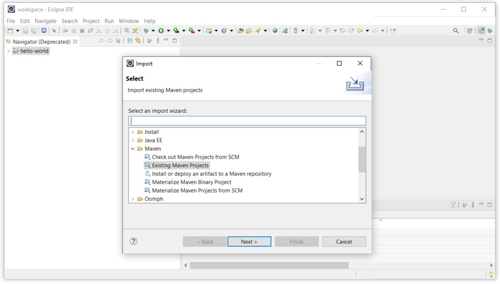

Install, Run, and Debug a Web Application in Eclipse
This page will demonstrate how to download the source code for a web application from github, import the application into Eclipse, deploy the application to the Eclipse Wildfly host, and then run and debug (step through) the source code using Eclipse.
Download the Source Code of an Application from Github
For this example we will be using the web-security-example application developed by NACHC. This application shows how to implement basic web security (e.g. authentication) using the Shiro framework.This application can be downloaded from https://github.com/NACHC-CAD/web-security-example. To download this application using git, open a cmd window and navigate to the C:\_YES\workspace and enter the command shown below. This will pull the source code for the NACHC web-security-example application down to your local host.
git clone https://github.com/NACHC-CAD/web-security-example

Import into Eclipse
Import the project into Eclipse according to the following. Open Eclipse by double clicking on the Eclipse shortcut in the C:\_YES folder. Select File->Import->Existing Maven Projects. Navigate to the C:\_YES\workspace\web-security-example folder and select Finish.
Start Wildfly in Eclipse in Debug Mode
Start Wildfly in debug mode by selecting the Server tab on the bottom pain. Right click on the Wildfly server and select Debug.Right click on the Wildfly server again and select Add/Remove
Select the web-security-example application, Add, then Finish
Test the Application
Test the application by opening a browser and navigating tohttp://localhost:8080/web-security-exampleThe application is hard coded to accept foo/bar as the username/password. Enter a nonsense username password other than foo/bar to test that the application does not let you in.
Set a Break Point
Open the MyAppRealm.java file (org/nachc/examples/websecurity/shiro/util/realm/MyAppRealm). Double click on the space beside the linenumber to set a breakpoint on line 24.Go back to the browser window, leave the username/password blank, and click Log On.
Switching back to Eclipse, you should see that the application has stopped at the break point. When asked if you want to switch to the debug view select no (for now). You can now step through the code using the controls shown in the image below.
When the login process is completed, you should see the index page of this example application as shown below.